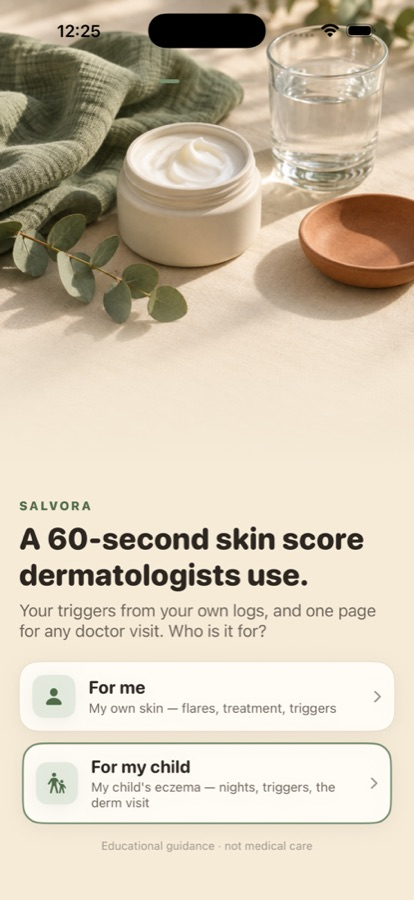
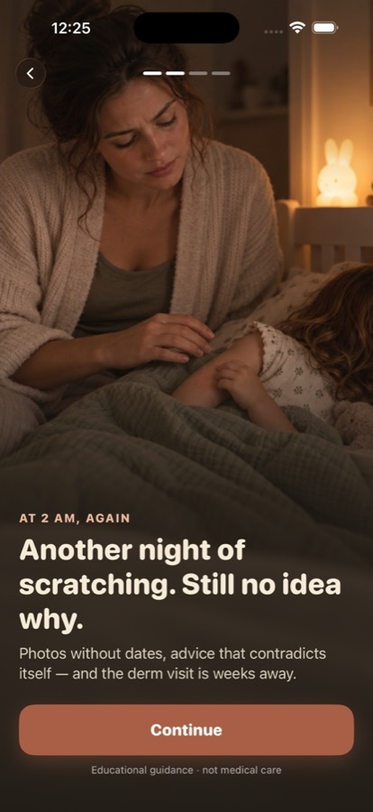
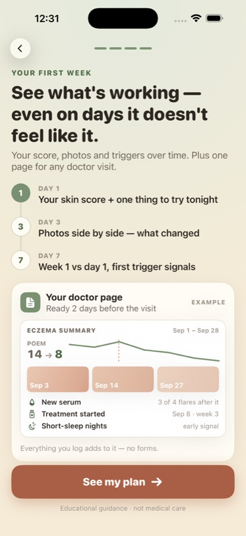
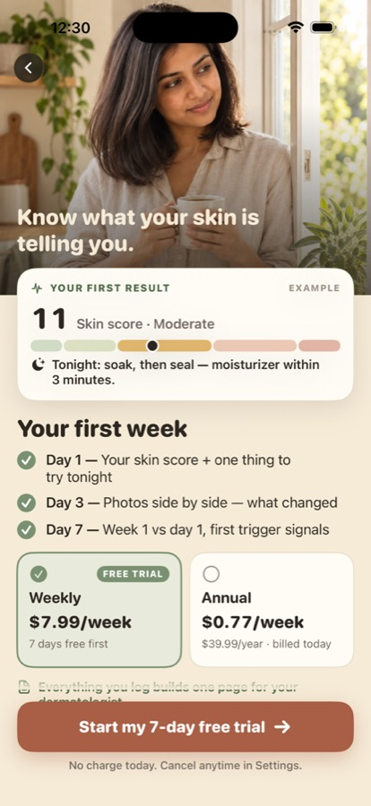
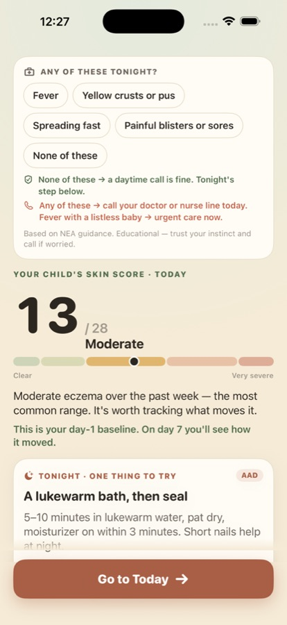
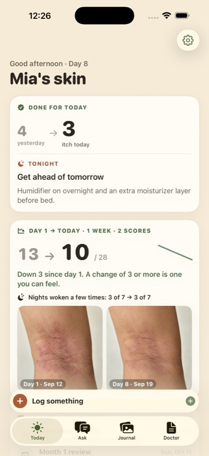
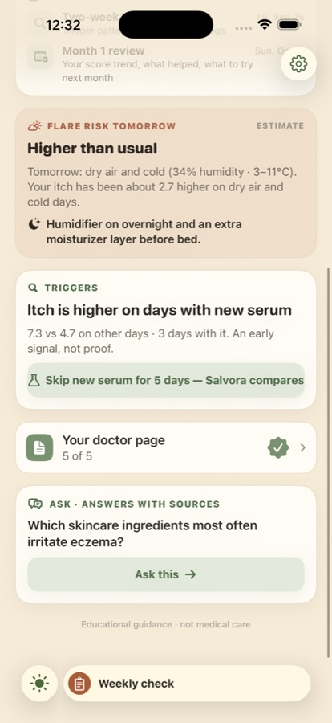
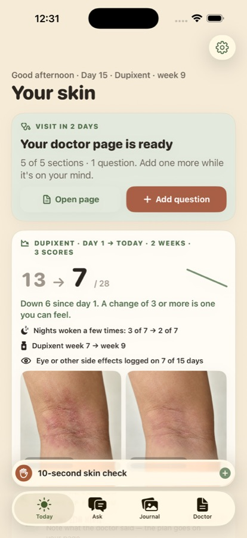

Экзема — это месяцы угадывания
31 млн американцев, 200 млн в мире. Обострение приходит «случайно», визит к дерматологу — через 6 недель и на 10 минут, фото в галерее без дат. Советы семьи и интернета противоречат друг другу.
Человек приходит с одной из трёх болей, за которые готов платить: «не знаю, что вызывает обострения», «не знаю, работает ли лечение», «не могу показать врачу, как было». Трекеров экземы много: бесплатные (EczemaWise до 18.12, Atopic App) и около десятка новых платных 2026 года, у каждого ≤15 оценок. Salvora V2 продаёт не трекинг, а результат: балл, который знает дерматолог, триггеры из её же записей и одну страницу к визиту — с первого дня.
Все цифры — Jev (TypeSafe System One): 24 синтетических человека, по 4 на персону + 4 из поиска, 2 прохода с обратным порядком вариантов, шум ≈ ±0.05. Это модель здравого смысла, а не платящие люди. Сырые данные: research/*-jev-2026-09-19/ в репозитории Salvora, ветка love8ko/sprint. Консилиум: docs/CONSILIUM_V2_POSITIONING_2026-09-19.md.
31 млн американцев, 200 млн в мире. Обострение приходит «случайно», визит к дерматологу — через 6 недель и на 10 минут, фото в галерее без дат. Советы семьи и интернета противоречат друг другу.
EczemaWise (NEA) закрывается 18.12.2026, регистрация закрыта с 15.04. EczemaLess не обновлялся 21 месяц. В 2026 вышло ~10 платных AI-трекеров ($19.99–159.99/год), но ни у одного нет больше 15 оценок. Выигрывает не «первый AI», а самое конкретное обещание и скорость набора отзывов.
Salvora собирает то, что нужно дерматологу (POEM — шкала, которой он пользуется; фото в худший день; что пробовали; вопросы), находит триггеры в её записях и превращает это в одну страницу к визиту. Трекинг — средство, а не продукт.
Доли — оценка ASO-плана (май 2026), а не данные плательщиков; реальные доли возьмём из RevenueCat после запуска V2 (атрибут audience). Две большие аудитории: родитель платит за ребёнка (≈45%) и взрослый платит за себя (≈55%). Поэтому в онбординге один тап: «For me / For my child».
I just want her to sleep through the night and to know what I'm doing wrong.
Is this an ER thing or a wait-till-morning thing? Just tell me.
I need proof that I'm healing, because some days it feels like I'm not.
This drug costs a fortune — I want to know it's working before my follow-up.
Every eczema app looks like a hospital intake form.
If I pay for this it better do something free apps don't.
Сила 0–4 взвешена по долям персон; порядок = сила + 4 × «за что заплатит». Этот порядок задаёт первые экраны онбординга и первые скриншоты App Store. Данные: research/positioning-jev-2026-09-19/.
| # | Боль (словами пользователя) | JTBD | Сила | Заплатит | Сильнее всего у | Чем закрываем |
|---|---|---|---|---|---|---|
| 1 | «Не знаю, что вызывает обострения, всё кажется случайным» | Понять, что влияет на кожу | 2.94 | 0.29 | Linda 3.11 · Jessica 3.02 | 3 тапа после фото + авто-погода → ранний сигнал с 7-го дня, паттерн с 14-го |
| 2 | «Работает ли то, чем лечим, и сколько ждать?» | Видеть «было → стало» | 3.06 | 0.12 | Jessica 3.21 · Mike 3.18 | Недельный POEM · дата проверки лечения · фото рядом |
| 3 | «Не могу показать врачу, как было» | Прийти к визиту с доказательством | 2.74 | 0.16 | Sarah 3.22 · Linda 2.99 | Страница для дерматолога с дня 0, готова за 2 дня до визита |
| 4 | «Срочно или подождёт до утра?» | Спокойно решить ночью | 2.69 | 0.05 | Mike 3.31 | Красные флаги NEA в Ask, план на ночь |
| 5 | «Это никогда не закончится, я один с этим» | Надежда | 2.69 | 0.04 | Jessica 2.91 | «Было → стало», тон, без празднования TSW |
| 6 | «Нужно доказать, что дорогое лечение работает» | Документы для врача и страховой | 1.55 | 0.13 | Sarah 3.23 | Дата проверки (неделя 16) + страница для врача |
| 7–9 | Рутина не работает · бросала трекинг · боюсь пропустить инфекцию | — | 2.3–2.4 | ≤0.07 | Jessica, Mike | Польза до 14-го дня; флаги инфекции в фото-чтении |
| 10–13 | Ночной зуд · страх стероидов · противоречивые советы · стыд | — | ≤2.19 | ≤0.03 | Linda, Jessica | Шаг на вечер, спокойные ответы Ask — не заголовки |
Раунды 1–2 — без конкурентов в контексте, раунд 3 — с живым срезом рынка. Когда видно, что трекеров много, выигрывает самое конкретное обещание.
| Обещание | Выбор (a/b) | Перескажет | Кому |
|---|---|---|---|
| «A 60-second skin score your dermatologist knows, your triggers, and one page for your next visit.» | р.3: 0.43 (0.43/0.43) р.2: 0.20 | 0.20 | Основное. Mike 0.68, Linda 0.51, из поиска 0.44. Совпадает с вау дня 0 |
| «Find what triggers your eczema — and walk into your derm visit with one page of proof.» | р.3: 0.33 р.2: 0.25 (0.29/0.22) | 0.22 | CPP для Rachel (0.57) |
| «See if your eczema treatment is really working — in scores and photos your dermatologist trusts.» | 0.19 | 0.14 | CPP для Sarah (0.55) и Jessica (0.41) |
| «Your eczema between dermatologist visits…» (перенос победителя Cysta) | 0.15–0.23 | 0.12–0.21 | Linda 0.33–0.41; нестабилен между проходами |
| «Stop guessing about eczema: snap your skin, get a score, spot your triggers.» | 0.11–0.21 | 0.23–0.31 | CPP для Mike (0.42); лучше всех «перескажут» |
| «The itch & trigger journal your dermatologist will actually read.» (из отчёта по конкурентам) · «…no account, your photos stay on your iPhone» | 0.01–0.02 | — | Приватность — строка доверия, не обещание |
| Текущее 1.x «The eczema tracker that remembers…» · «Calmer nights…» · «Know tomorrow's flare risk…» · «Action plan…» · «Moving on from EczemaWise…» | ≤0.11 | ≤0.14 | — |
Живые данные App Store — research/competitors-2026-09-19/COMPETITORS_AND_PAINS.md.
| Приложение | Рейтинг (US) | Обн. | Цена | Что даёт |
|---|---|---|---|---|
| EczemaWise (NEA) | 4.64 / 217 | 04.2026 | бесплатно | Симптомы, триггеры, фото, POEM, Appointment Summary. Регистрация закрыта 15.04, закрытие 18.12.2026; фото у NEA нет — пропадут с приложением. NEA замену не рекомендует |
| EczemaLess | 4.59 / 66 | 12.2024 | бесплатно | AI-оценка по фото, погодные алерты. 21 месяц без обновлений |
| Eczema Flare & Itch Tracker | 0 | 05.2026 | $29.99/год | EASI + недельный POEM + зуд + сканер контактных аллергенов — ближе всех к нам |
| Skintrics | 4.14 / 7 | 09.2026 | $7.99 · $29.99/год, триал 7 дней | Триггеры с уровнем уверенности Low/Moderate/High, позиционирование на TSW |
| Eczemate · EczemaEase · Itchless · Alara · FlareLog · Aureya | 0–5 / ≤3 | 2025–2026 | $19.99–159.99/год | Скан еды и средств, авто-погода, семейные профили, ghost-overlay фото |
| Atopic App · My Eczema Tracker (Nottingham) · SkinFam · Patternly | 0–1 | 2026 | бесплатно | POEM/RECAP, семейные профили, детский лог |
| Bearable (горизонтальный) | 4.77 / 6 335 | — | $4.49–49.99 | Корреляции за пейволом; главная претензия — «statistically not significant» |
| ACDS CAMP | 2.38 / 249 | — | по коду врача | Безопасные средства по патч-тесту. #1 по «atopic dermatitis» в US при 2.38★ |
| Salvora (мы, 1.6) | 4.5 / 4 | 09.2026 | $7.99/нед · $39.99/год | #38 «eczema» US, #25 «eczema» GB, вне топ-25 «eczema tracker» US |
DE: Nia (4.53 / 137) оплачивается больничными кассами и идёт в DiGA → Германия не в первую платную волну.
| Бесплатно у других | За что платят у нас |
|---|---|
| Лог симптомов, фото, календарь, POEM-опросник | Тренд балла с интерпретацией и страница для врача к визиту |
| AI-оценка тяжести по фото (жалобы: «camera doesn't pick up my eczema», «said my eczema was a mole») | Не продаём фото-AI как главное: зуд и сон — первая метрика, фото — дополнение |
| Авто-погода (заброшенные приложения) | Персональный прогноз «ваш паттерн + завтра» |
| Корреляции (Bearable — «не значимы») | Честные триггеры: «рано / сигнал / паттерн» и сколько дней ещё нужно |
14 кандидатов от консилиума: 5 голосов экспертов, 5 персон и «нестандартный» голос. Правило: если у конкурента это бесплатно — это гигиена, а не киллер. «Начнёт триал», «продлит», «перескажет» — выбор одной фичи из 14, поэтому 0.10+ — сильный сигнал. Данные: research/killer-feature-jev-2026-09-19/.
| Фича (что увидит пользователь) | Триал | Продлит | Перескажет | Использует в 1-ю неделю | Стоит денег | Решение |
|---|---|---|---|---|---|---|
| Страница для дерматолога — тренд балла, фото худших дней, триггеры, что пробовали, вопросы; готова за 2 дня до визита | 0.33 | 0.37 | 0.42 | 0.69 | 0.63 | V2 · ядро видна с дня 0 |
| Прогноз «flare risk tomorrow» — её паттерн + влажность, холод, пыльца; один шаг заранее | 0.15 | 0.16 | 0.12 | 0.72 | 0.59 | на решение нужна погода (новый сервис) |
| Ночной триаж «до утра или сегодня» по красным флагам NEA, за 30 секунд | 0.11 | 0.10 | 0.10 | 0.60 | 0.51 | V2 внутри Ask, для Mike |
| Таймлапс заживления + анонимная карточка | 0.07 | 0.07 | 0.06 | 0.43 | 0.34 | бэклог Jessica/Rachel |
| Недельный POEM · дата проверки лечения · проверка состава крема · action plan | 0.05–0.06 | 0.04–0.05 | ≤0.05 | 0.47–0.72 | 0.46–0.57 | гигиена POEM и дата проверки — части страницы для врача |
| Общий доступ · импорт EczemaWise · «это правда еда?» | 0.02–0.05 | ≤0.04 | ≤0.05 | 0.29–0.59 | 0.25–0.37 | не в V2 EczemaWise — маркетинг/ASO, не причина платить |
| Утренний лог ночных пробуждений · календарь стероидов · Apple Watch ловит расчёсы | ≤0.01 | ≤0.01 | ≤0.01 | 0.43–0.64 | 0.39–0.47 | не делать |
Что человек видит в день 0, 1, 3 и 7. День 0 и причина вернуться — лидеры Jev; остальное — план спринта (§2.6), измеряется в Fable-раундах по скриншотам.
POEM за 60 секунд — шкала, которой пользуется дерматолог, — что это значит и один шаг на вечер с источником AAD/NEA. Первый штамп на странице для врача.
Jev: 0.50 из 6 вариантов (Sarah 0.70, Linda 0.63). Для Mike — ещё и план на ночь.
Since yesterday: помог ли вчерашний шаг — зуд и сон вчера против сегодня. Фото с тремя тапами «что было за 24 часа».
Jev: причина вернуться №1 — 0.39 (Mike 0.58, Linda 0.51).
Фото рядом и что изменилось. Погода за три дня уже лежит рядом с её записями — без ввода.
Jev: 0.14 как причина вернуться; сильнее всего у Jessica.
Недельный POEM против дня 0, первые ранние сигналы триггеров, страница для врача 3 из 5. С этого дня — вечерний «flare risk tomorrow» (если решим).
Sarah: «coming up» — её даты (0.53).
Одна и та же неделя триала, описанная в трёх версиях: «продлит $7.99/нед» (1–5). Данные: research/positioning-r2-jev-2026-09-19/.
| Версия первой недели | Все | Linda | Mike | Jessica | Sarah | Rachel | Поиск |
|---|---|---|---|---|---|---|---|
| Текущая 1.6: фото-лог, POEM-слайдер, чипы триггеров, коуч, паттерны после ~14 логов, PDF во вкладке Insights | 2.05 | 2.23 | 1.84 | 2.07 | 2.56 | 1.91 | 1.69 |
| V2: POEM в день 0 + шаг на вечер, since yesterday, фото рядом в день 3, недельный POEM в день 7, страница для врача с дня 0, «coming up» | 2.23 | 2.44 | 2.14 | 2.20 | 2.59 | 2.08 | 1.90 |
| V2 + авто-погода + вечерний прогноз с 7-го дня | 2.31 | 2.54 | 2.19 | 2.28 | 2.68 | 2.21 | 1.93 |
Статус взят из аудита кода 19.09.2026, а не из прежних документов.
| Функция | Статус | Что мешает / что делаем в V2 |
|---|---|---|
| Онбординг | 10 экранов, 4 с вводом | ≥14 тапов до цены; выдуманные отзывы с подписью «pulled from the App Store» (риск 2.3.1). V2: 4 визуальных экрана + тап «для кого», без ввода. |
| Пейвол | без триала | Weekly $7.99 и Annual $39.99 без триала, тёмный, кнопка «Continue». V2: Weekly с 7-дневным триалом по умолчанию, Annual без триала, «ценность → цена». |
| Setup после оплаты | 4 экрана | Повторяет POEM и симптомы; просит уведомления до пользы; выбранный час игнорируется. V2: 2 экрана квиза → POEM → результат. |
| Фото + AI-чтение | работает | После триггеров шит закрывается молча. V2: 3 тапа после фото + карточка-итог. |
| Паттерны триггеров | поздно и с ошибкой в тексте | Нужно ≥14 логов; четыре разных порога в тексте; «N% of your flare days» считает не то. V2: один честный порог + погода. |
| AI-коуч (DeepSeek + RAG 932 чанка) | работает | Списки в ответах рендерятся сырыми «-». V2: вкладка Ask, короткий ответ, «Save as a question». |
| PDF для врача | спрятан | Только во вкладке Insights; статичные вопросы подписаны «AI-generated». V2: вкладка Doctor, страница с дня 0. |
| Insights | пусто до 14 дней | Залоченные карточки открываются в никуда. V2: раскладываем по Today, Journal, Doctor. |
| Уведомления | до пользы | Нажатие никуда не ведёт; пуш после празднования через 60 с. V2: 14-дневный план после первой пользы, deep links. |
| Аналитика | нет | Ни одного события. V2: локальный журнал активации + атрибуты RevenueCat. |
| Дизайн | устарел | Свой таб-бар с кнопкой «+», 135 мест со шрифтом <12pt, нет Dynamic Type. V2: системный TabView, Liquid Glass, Apothecary Sage. |
Цикл Cysta: Jev выбирает рычаг → строим → съёмка всей первой недели каждой персоны (22 кадра своей ветки, симулятор «Salvora») → пять Fable-персон судят только свои скриншоты → правки в тот же день → повтор. 8 волн кода, ветка love8ko/sprint.
| Раунд | Linda | Mike | Jessica | Sarah | Rachel | Что изменили после |
|---|---|---|---|---|---|---|
| r1 · онбординг+пейвол триал / годовая | 4 / 2 | 4 / 1 | 3 / 2 | 4 / 2 | 4 / 2 | обе карточки тарифов над кнопкой (Jev: «ловушка» 0.50 → 0.40), «dermatologists use», пример страницы по когорте, флаги для Mike |
| r2 · вся неделя продлю / годовая | 3 / 3 | 2 / 2 | 3 / 3 | 4 / 3 | 3 / 3 | «день 1 → сегодня» с фото того же места, план лечения, плитка средств, флаги до балла |
| r3 | 4 / 3 | 3 / 3 | 3 / 4 | 3 / 4 | 3 / 4 | нет противоречия «зуд вверх / балл вниз», шаг на вечер из прогноза, побочки на странице |
| r4 | 4 / 4 | 3 / 3 | 4 / 4 | 4 / 4 | 3 / 4 | недельная проверка на 7-й день — до первого списания, тест «убери на 5 дней», «Is it serious?» в любой момент |
| r5 | 4 / 4 | 3 / 4 | 4 / 5 | 5 / 4 | 3 / 4 | прогресс её словами (ночи, неделя Dupixent, волны TSW), «logged» ≠ «найдено» |
| r6 | 4 / 4 | 3 / 4 | 4 / 5 | 5 / 4 | 4 / 4 | «Готов(а) продолжать и платить: да» — у всех пяти (Mike — только годовую) |








Майский справочник сохранён целиком. Прежние цены ($4.99/нед, триал на годовой, Family) актуальный продукт не задают.
Справочник мая 2026 (дизайн-система, JTBD, табы, скриншоты, пейвол v1)